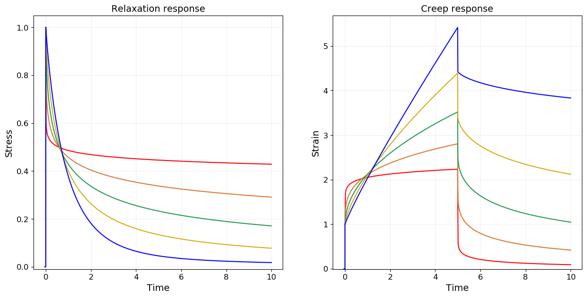
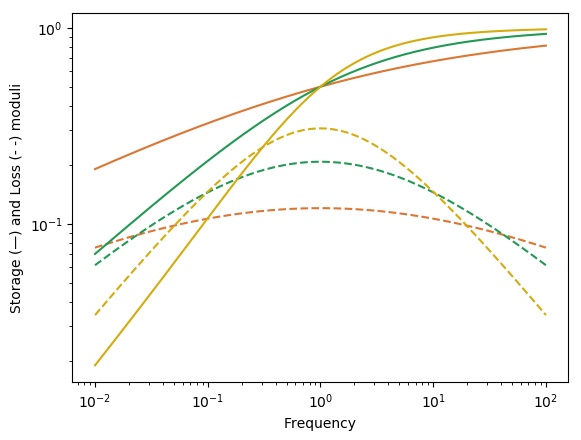
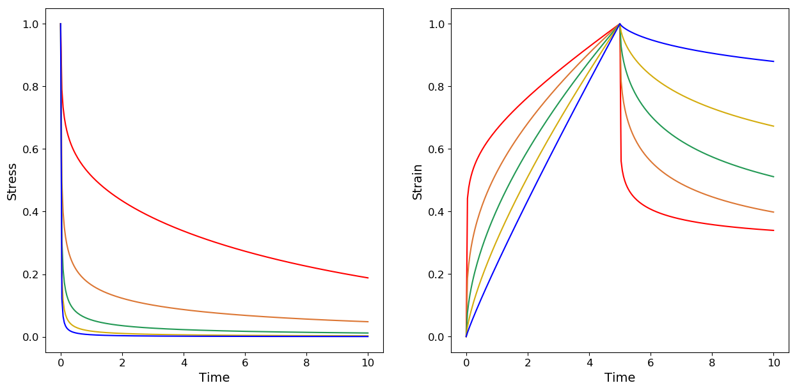
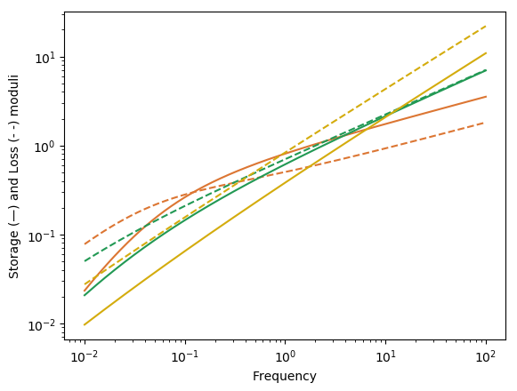
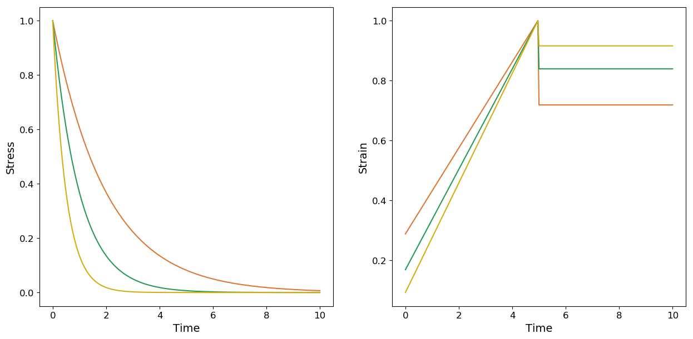
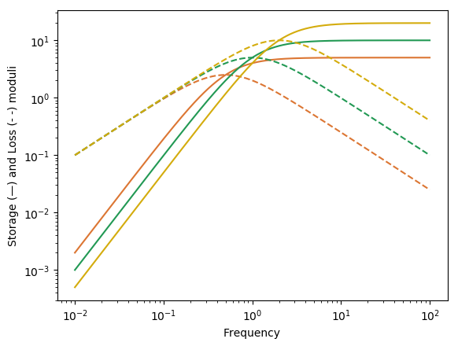

Fractional Maxwell
using RHEOS
using PyPlotFractionalMaxwellModel name: fractmaxwell
Free parameters: cₐ, a, cᵦ and β
___╱╲__________╱╲____
╲╱ ╲╱
cₐ,a cᵦ, βConsitutive equation
\[\sigma(t) + \frac{c_\alpha}{c_\beta} \frac{d^{\alpha-\beta} \sigma(t)}{dt^{\alpha-\beta}}= c_{\alpha} \frac{d^\alpha \epsilon(t)}{dt^\alpha}\]
Relaxation modulus
\[G(t) = c_\beta t^{-\beta} E_{\alpha-\beta,1-\beta}\left(-\frac{c_\beta}{c_\alpha} t^{\alpha-\beta}\right)\]
Creep modulus
\[J(t) = \frac{1}{c_\alpha \Gamma(1+\alpha)}t^\alpha+\frac{1}{c_\beta \Gamma(1+\beta)}t^\beta\]
Storage modulus
\[G^{\prime}(\omega) = \frac{\left(c_\beta \omega^\beta\right)^2 \cdot c_\alpha \omega^\alpha \cos(\alpha \frac{\pi}{2}) + \left(c_\alpha \omega^\alpha\right)^2 \cdot c_\beta \omega^\beta \cos(\beta \frac{\pi}{2})}{\left(c_\alpha \omega^\alpha\right)^2+\left(c_\beta \omega^\beta\right)^2+2c_\alpha \omega^\alpha \cdot c_\beta \omega^\beta \cos((\alpha-\beta)\frac{\pi}{2})}\]
Loss modulus
\[G^{\prime\prime}(\omega) = \frac{\left(c_\beta \omega^\beta\right)^2 \cdot c_\alpha \omega^\alpha \sin(\alpha \frac{\pi}{2}) + \left(c_\alpha \omega^\alpha\right)^2 \cdot c_\beta \omega^\beta \sin(\beta \frac{\pi}{2})}{\left(c_\alpha \omega^\alpha\right)^2+\left(c_\beta \omega^\beta\right)^2+2c_\alpha \omega^\alpha \cdot c_\beta \omega^\beta \cos((\alpha-\beta)\frac{\pi}{2})}\]
Fractional (Spring) Maxwell
FractionalMaxwellSpringModel name: fractmaxwell_spring
Free parameters: cₐ, a and k
___╱╲_________╱╲ ╱╲ ╱╲ ________
╲╱ ╲╱ ╲╱ ╲╱
cₐ,a k# Create a time only dataset
dϵ = timeline()
dσ = timeline()
# calculate a strain/stress data by appling a function of time (by defalut a unit step otherwise substitute hstep(amp = 2.))
dϵ = strainfunction(dϵ, hstep())
dσ = stressfunction(dσ, hstep()) - stressfunction(dσ, hstep(offset = 5.0))
colplot = ["red", "#dc7633", "#229954", "#d4ac0d", "blue"]
fig, ax = subplots(1,2, figsize=(15,7))
# plot moduli for varying α
for (i,alpha) in enumerate([0.1, 0.3, 0.5, 0.7, 0.9])
fmaxwellspring_model = RheoModel(FractionalMaxwellSpring,(cₐ = 1.0, a = alpha, k = 1.0))
#Relaxation modulus
dG_fmaxwellspring = modelpredict(dϵ, fmaxwellspring_model)
ax[1].plot(dG_fmaxwellspring.t, dG_fmaxwellspring.σ./maximum(dG_fmaxwellspring.σ), color=colplot[i])
# Creep modulus
dJ_fmaxwellspring = modelpredict(dσ, fmaxwellspring_model)
ax[2].plot(dJ_fmaxwellspring.t, dJ_fmaxwellspring.ϵ./maximum(dJ_fmaxwellspring.ϵ), color=colplot[i])
end
ax[1].set_xlabel("Time", fontsize = 14);
ax[1].set_ylabel("Stress", fontsize = 14);
ax[1].tick_params("both", labelsize=12);
ax[2].set_xlabel("Time", fontsize = 14);
ax[2].set_ylabel("Strain", fontsize = 14);
ax[2].tick_params("both", labelsize=12);
dω = frequencyspec()
colplot = ["#dc7633", "#229954", "#d4ac0d", "blue"]
# plot moduli for varying α
for (i,alpha) in enumerate([0.3, 0.5, 0.7])
fmaxwellspring_model = RheoModel(FractionalMaxwellSpring,(cₐ = 1.0, a = alpha, k = 1.0))
# Storage and Loss moduli
d_fmaxwellspring = dynamicmodelpredict(dω, fmaxwellspring_model)
loglog(d_fmaxwellspring.ω, d_fmaxwellspring.Gp, color=colplot[i], "-")
loglog(d_fmaxwellspring.ω, d_fmaxwellspring.Gpp, color=colplot[i], "--")
end
xlabel("Frequency");
ylabel("Storage (—) and Loss (- -) moduli");
Fractional (Dashpot) Maxwell
FractionalMaxwellDashpotModel name: fractmaxwell_dashpot
Free parameters: η, cᵦ and β
___
_____| |_________╱╲____
_|_| ╲╱
η cᵦ, β# Create a time only dataset
dϵ = timeline()
dσ = timeline()
# calculate a strain/stress data by appling a function of time (by defalut a unit step otherwise substitute hstep(amp = 2.))
dϵ = strainfunction(dϵ, hstep())
dσ = stressfunction(dσ, hstep()) - stressfunction(dσ, hstep(offset = 5.0))
colplot = ["red", "#dc7633", "#229954", "#d4ac0d", "blue"]
fig, ax = subplots(1,2, figsize=(15,7))
# plot moduli for varying β
for (i,beta) in enumerate([0.1, 0.3, 0.5, 0.7, 0.9])
fmaxwelldashpot_model = RheoModel(FractionalMaxwellDashpot,(η = 10, cᵦ= 1.0, β = beta))
#Relaxation modulus
dG_fmaxwelldashpot = modelpredict(dϵ, fmaxwelldashpot_model)
ax[1].plot(dG_fmaxwelldashpot.t, dG_fmaxwelldashpot.σ./maximum(dG_fmaxwelldashpot.σ), color=colplot[i])
# Creep modulus
dJ_fmaxwelldashpot = modelpredict(dσ, fmaxwelldashpot_model)
ax[2].plot(dJ_fmaxwelldashpot.t, dJ_fmaxwelldashpot.ϵ./maximum(dJ_fmaxwelldashpot.ϵ), color=colplot[i])
end
ax[1].set_xlabel("Time", fontsize = 14);
ax[1].set_ylabel("Stress", fontsize = 14);
ax[1].tick_params("both", labelsize=12);
ax[2].set_xlabel("Time", fontsize = 14);
ax[2].set_ylabel("Strain", fontsize = 14);
ax[2].tick_params("both", labelsize=12);
dω = frequencyspec()
colplot = ["#dc7633", "#229954", "#d4ac0d", "blue"]
# plot moduli for varying β
for (i,beta) in enumerate([0.3, 0.5, 0.7])
fmaxwelldashpot_model = RheoModel(FractionalMaxwellDashpot,(η = 10, cᵦ= 1.0, β = beta))
# Storage and Loss moduli
d_fmaxwelldashpot = dynamicmodelpredict(dω, fmaxwelldashpot_model)
loglog(d_fmaxwelldashpot.ω, d_fmaxwelldashpot.Gp, color=colplot[i], "-")
loglog(d_fmaxwelldashpot.ω, d_fmaxwelldashpot.Gpp, color=colplot[i], "--")
end
xlabel("Frequency");
ylabel("Storage (—) and Loss (- -) moduli");
Maxwell model
MaxwellModel name: maxwell
Free parameters: η and k
___
_____| |________╱╲ ╱╲ ╱╲ ___
_|_| ╲╱ ╲╱ ╲╱
η k# Create a time only dataset
dϵ = timeline()
dσ = timeline()
# calculate a strain/stress data by appling a function of time (by defalut a unit step otherwise substitute hstep(amp = 2.))
dϵ = strainfunction(dϵ, hstep())
dσ = stressfunction(dσ, hstep()) - stressfunction(dσ, hstep(offset = 5.0))
fig, ax = subplots(1,2, figsize=(15,7))
colplot = ["#dc7633", "#229954", "#d4ac0d"]
# plot moduli for varying k
for (i,k) in enumerate([5.0, 10.0, 20.0])
maxwell_model = RheoModel(Maxwell,(η = 10, k = k))
#Relaxation modulus
dG_maxwell = modelpredict(dϵ, maxwell_model)
ax[1].plot(dG_maxwell.t, dG_maxwell.σ./maximum(dG_maxwell.σ), color=colplot[i])
# Creep modulus
dJ_maxwell = modelpredict(dσ, maxwell_model)
ax[2].plot(dJ_maxwell.t, dJ_maxwell.ϵ./maximum(dJ_maxwell.ϵ), color=colplot[i])
end
ax[1].set_xlabel("Time", fontsize = 14);
ax[1].set_ylabel("Stress", fontsize = 14);
ax[1].tick_params("both", labelsize=12);
ax[2].set_xlabel("Time", fontsize = 14);
ax[2].set_ylabel("Strain", fontsize = 14);
ax[2].tick_params("both", labelsize=12);
dω = frequencyspec()
colplot = ["#dc7633", "#229954", "#d4ac0d"]
# plot moduli for varying k
for (i,k) in enumerate([5.0, 10.0, 20.0])
maxwell_model = RheoModel(Maxwell,(η = 10, k = k))
# Storage and Loss moduli
d_maxwell = dynamicmodelpredict(dω, maxwell_model)
loglog(d_maxwell.ω, d_maxwell.Gp, color=colplot[i], "-")
loglog(d_maxwell.ω, d_maxwell.Gpp, color=colplot[i], "--")
end
xlabel("Frequency");
ylabel("Storage (—) and Loss (- -) moduli");